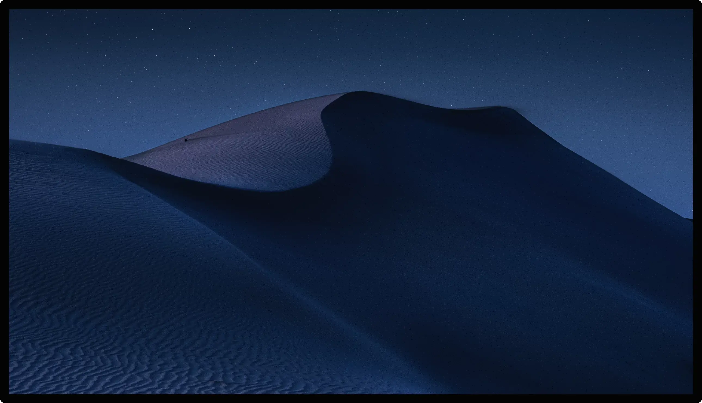
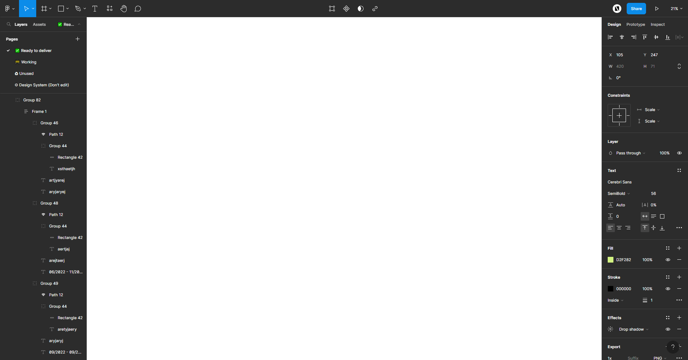
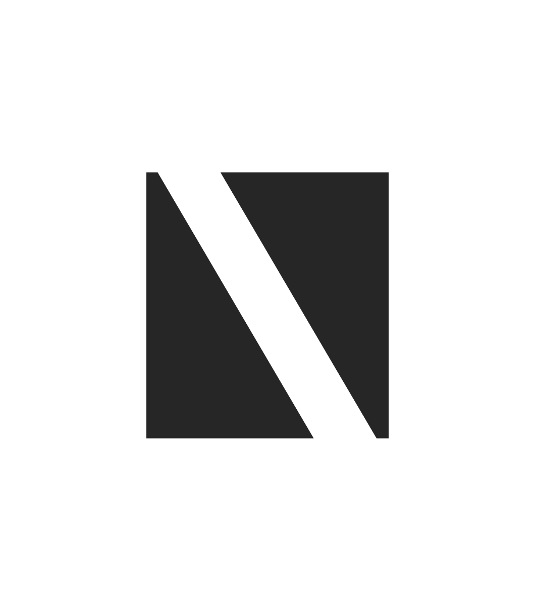

Hey, I'm Neel, a product designer and design engineer. I design software and direct AI agents to ship it, from a 10-platform design system to a freight tool that books real shipments.


I design the product, then direct the AI that builds it.
I design the product and direct AI agents to build the front end. When they cut a corner, the checks I write catch it.

Experience Snapshot
The part I won't hand off is the judgment.
I started as a computer science graduate in India, but I cared more about why the code existed than the code itself, and that pulled me into design. Four years later I design the front end, direct AI agents to build it, and write the checks that catch them when they fake done. I have worked across video, 3D, and product interfaces, and the part I will not hand off is the judgment about what good looks like.